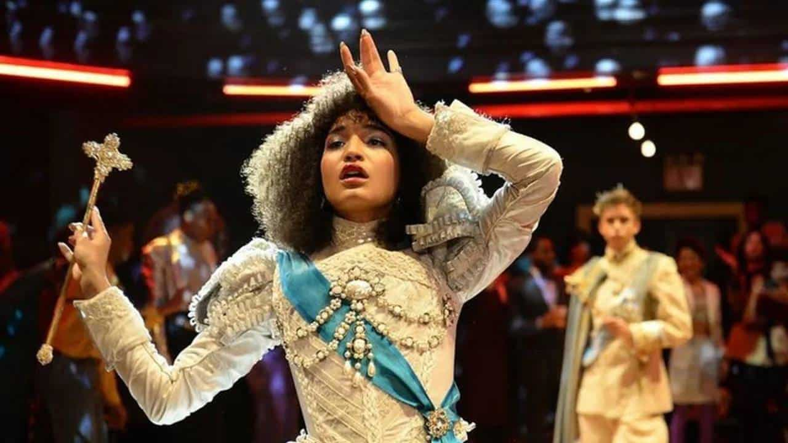

Introdução
Em 28 de junho de 1969, Stonewall Inn, Greenwich Village, Estados Unidos. A história começa nas primeiras horas da manhã, quando gays, lésbicas, travestis e drag queens enfrentam policiais e iniciam uma rebelião que lançaria as bases para o movimento pelos direitos LGBT nos Estados Unidos e no mundo. O episódio, conhecido como Stonewall Riot (Rebelião de Stonewall), teve duração de seis dias e foi uma resposta às ações arbitrárias da polícia, que rotineiramente promovia batidas e revistas humilhantes em bares gays de Nova Iorque.
Este episódio é considerado o marco zero do movimento LGBT contemporâneo e, por isso, é comemorado mundialmente em 28 de junho, Dia Internacional do Orgulho LGBT. Uma data para celebrar vitórias históricas, mas também para relembrar que ainda há um longo caminho a ser percorrido..
VIOLÊNCIA: UMA LINHA DO TEMPO
 |
Os primeiros registros históricos da homossexualidade datam de 1.200 A.C. Diversos pesquisadores e historiadores afirmam que a homossexualidade foi aceita em diversas civilizações ao longo da história. Apesar disso, em muitos países, gays, lésbicas, bissexuais, travestis e transexuais foram e ainda são constantemente violentados, presos, torturados e mortos, sem proteção das leis, que podem ser omissas, conter brechas ou até mesmo respaldar a violência contra essa comunidade. | O primeiro código penal contra a homossexualidade data do século XIII e pertenceu ao império de Gengis Khan, onde a sodomia era punida com a morte. No Ocidente, as primeiras leis anti-homossexuais, ambas redigidas sob influência da Inquisição, foram publicadas em 1533: o Buggery Act (Inglaterra) e o Código Penal de Portugal. A partir disso, leis anti-homossexuais se espalharam por diversos países do Ocidente que, por sua vez, as impuseram às suas colônias |
| Durante os últimos dois séculos, a violência, institucional ou não, continuou perseguindo os LGBTs: no nazismo, eles eram levados aos campos de concentração. Dois símbolos do movimento surgem aí: o triângulo rosa invertido, utilizado para identificar homens gays, e o triângulo preto invertido, destinado às “mulheres anti-sociais”, grupo que incluía as lésbicas. Teorias médicas e psicológicas tratavam a homossexualidade como uma doença mental que podia ser curada através de métodos de tortura, como a castração, a terapia de choque, a lobotomia e os estupros corretivos. | É importante frisar que essas violências não pertencem ao passado distante: até os anos 60, a homossexualidade ainda era ilegal em todos os estados dos EUA, com exceção de Illinois. Alan Turing, o pai da computação retratado no filme “O jogo da imitação”, foi quimicamente castrado sob ordens do governo inglês em 1952, por exemplo. Em diversos países, comunidades terapêuticas particulares continuam a oferecer serviços de “cura gay”. Ainda nesta década, a relação homossexual é crime em 73 países. Dessa lista, 13 nações preveem pena de morte como penalidade. No Brasil, de acordo com os dados de 2016 do Grupo Gay da Bahia (GBB), um LGBT é assassinado a cada 24 horas. Mas, como afirma o filósofo francês Michel Foucault, “onde há poder, há resistência”. |
| A rebelião de Stonewall teve uma série de consequências. No Livro “Stonewall: the riots that sparked the gay revolution”, o historiador David Carter afirma que há um amplo consenso de que foi essa rebelião que marcou o início do Gay Rights Movement (em tradução livre, movimento pelos direitos gays). Uma das consequências de Stonewall foi a criação de dois grupos que desempenharam um papel importante na história do movimento LGBT: o Gay Liberation Front (GLF) e o Gay Activists Alliance (GAA). | Não há consenso sobre qual episódio marca o início dos movimentos trans, mas a criação do periódico Transvestia: The Journal of the American Society for Equality in Dress, em 1952, é considerado por alguns o marco inicial dessa luta nos Estados Unidos. Além disso, travestis e transexuais (especialmente Sylvia Rae Rivera e Marsha P. Johnson) foram figuras-chave da Rebelião de Stonewall. |
Cultura Ballroom: uma história de arte, resistência e acolhimento LGBTQIAPN+
História
Mais do que performance e estética, a ballroom é uma forma de resistência coletiva criada por pessoas negras, latinas e LGBTQIAPN+ que foram sistematicamente excluídas dos espaços artísticos e sociais. Sua origem remonta aos anos 1970 em Nova York, com figuras como Crystal LaBeija, mulher trans negra que fundou a House of LaBeija após sofrer racismo em concursos drag dominados por brancos.
|  | VOGUING: O voguing surgiu dentro das ballrooms como uma forma de dança inspirada em poses de revista e movimentos geométricos. Tornou-se uma linguagem visual potente, usada para contar histórias, jogar crítica e afirmar corpos dissidentes com orgulho e beleza. | ESPAÇOS DE ACOLHIMENTO: Nos anos 1980, durante a epidemia de AIDS, a comunidade LGBT+ enfrentou exclusão do sistema de saúde e apoio familiar. Nas ballrooms, encontravam espaços de suporte mútuo, cuidado e informação em saúde, fortalecidos pelas estruturas das houses. Enquanto o poder público ignorava a epidemia, especialmente entre populações negras e trans, as houses criaram estratégias de cuidado, informação e suporte emocional. Até hoje, dados mostram que pessoas trans negras continuam entre os grupos mais vulnerabilizados: segundo a ANTRA (2023), 82% das travestis e mulheres trans no Brasil não têm acesso ao mercado formal de trabalho. |
HOUSES
As houses (casas) são famílias escolhidas dentro da cultura ballroom. Elas foram criadas para acolher pessoas LGBTQIAPN+, que foram expulsas de casa ou vivem em contextos de vulnerabilidade. Cada house é liderada por uma “mãe” ou “pai”, que cuidam e protegem seus integrantes. Juntas, essas pessoas formam uma rede de apoio afetivo, político e artístico. Nas balls, as houses competem entre si, mostrando performances, looks e coreografias, mas fora do palco, elas funcionam como espaços de afeto e pertencimento.
NO BRASIL
No Brasil, a cultura ballroom começou a se estruturar a partir de 2015. A primeira ball aconteceu em Brasília, e logo surgiram houses em São Paulo, Salvador, Recife e outras cidades. Aqui, a ballroom se conecta com o passinho, o funk, a cultura de favela e as lutas raciais e de gênero. É cultura preta, periférica e queer em movimento. Ballroom é arte, mas também é denúncia. Em cada desfile, performance ou batalha, há uma mensagem: a de que corpos negros, trans, travestis e periféricos existem, resistem e criam. A cena funciona como escola política: nela se discute gênero, raça, saúde, história e direitos. É cultura viva e transformadora.
INDICAÇÃO
A série “Pose”, disponível na Apple TV e Disney+ e NETFLIX, que retrata a cultura ballroom na cidade de Nova Iorque, nas décadas de 1980 e 1990, com foco nas comunidades LGBTQIAPN+ afro-americanas e latinas.
Queer, o que é?
De forma direta, queer é um termo usado para descrever pessoas cujas identidades de gênero ou orientações sexuais fogem das normas cis-heteronormativas. Ou seja, pessoas que não se identificam com os padrões tradicionais de masculinidade, feminilidade, gênero binário e heterossexualidade.
Hoje, queer é entendido como um termo guarda-chuva. Isso significa que ele abrange uma série de vivências e identidades que não se encaixam em categorias fixas ou normativas.
Quem se define como queer pode ser gay, lésbica, bissexual, pansexual, trans, não-binário, agênero, entre outras identidades ou nenhuma delas especificamente. O foco está justamente na fluidez e na recusa de rótulos fixos.
Mais do que uma orientação ou identidade de gênero, ser queer é também um posicionamento político e social. É afirmar, com orgulho, uma existência fora dos padrões impostos pela sociedade.
Como queer é usado atualmente?
Hoje, o termo queer é utilizado de diversas formas. Ele pode servir como autoidentificação para pessoas que não se reconhecem nas categorias tradicionais de gênero e sexualidade. Como também, pode representar um posicionamento político de contestação às normas sociais que impõem um padrão único de existência.
Na prática, ser queer pode significar:
Além da vivência cotidiana, queer também se consolidou como conceito em ambientes acadêmicos, especialmente a partir da criação da Teoria Queer.
Na cultura pop, artistas, influenciadores e personagens têm assumido identidades queer como forma de visibilidade e afirmação. O termo está presente em entrevistas, músicas, roteiros, discursos e redes sociais, ajudando a ampliar o debate sobre diversidade.
Queer é uma identidade?
Sim. Para muitas pessoas, queer é uma identidade pessoal. E mais: é uma forma de afirmar quem se é num mundo que tenta, a todo momento, encaixar todo mundo em caixas estreitas.
Uma pessoa pode se identificar como queer quando:
Essa identidade pode mudar ao longo da vida e tudo bem. A fluidez é parte essencial da experiência queer.